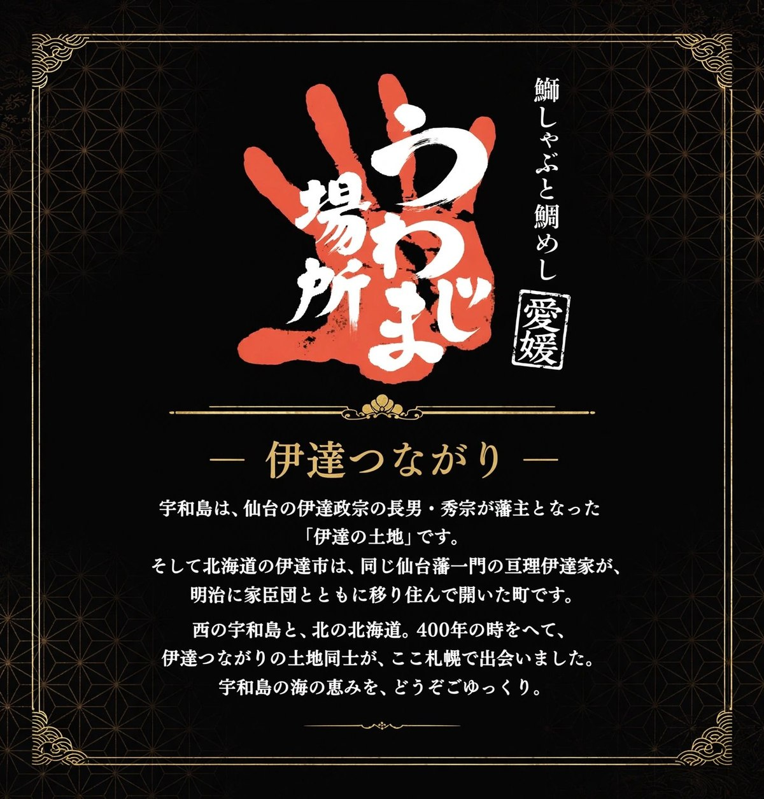

伊達つながり ― 宇和島と北海道、400年の縁
お店のテーブルに置いているカードです。私の勤める「うわじま場所 札幌桑園店」には、こんな物語があります。

宇和島は「伊達の土地」
宇和島は、仙台の伊達政宗の長男・秀宗が藩主となった「伊達の土地」です。お店の看板メニュー、鰤しゃぶと鯛めしは、その宇和島の海の恵みです。
北海道にも「伊達」の町
そして北海道の伊達市は、同じ仙台藩一門の亘理伊達家が、明治に家臣団とともに移り住んで開いた町です。
西の宇和島と、北の北海道。400年の時をへて、伊達つながりの土地同士が、ここ札幌で出会いました。
宇和島の海の恵みを、どうぞごゆっくり。
お店の詳しい情報は、こちらの記事にまとめています。
← トップページへ戻る